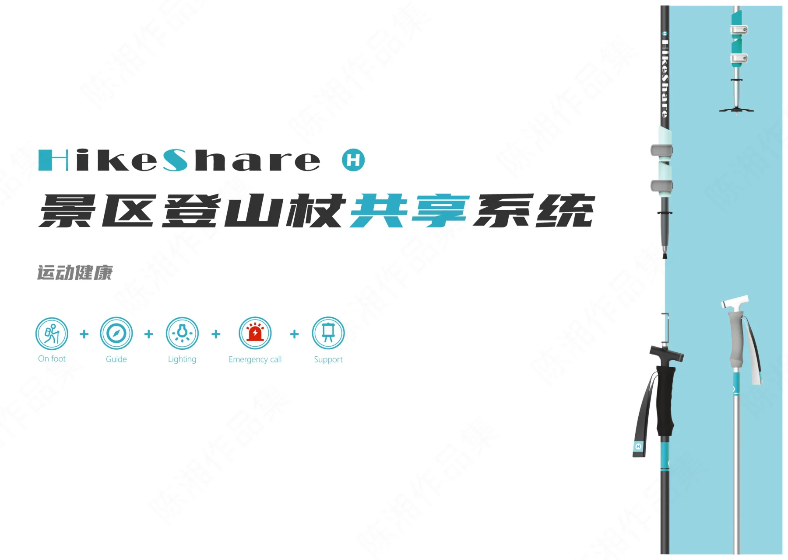
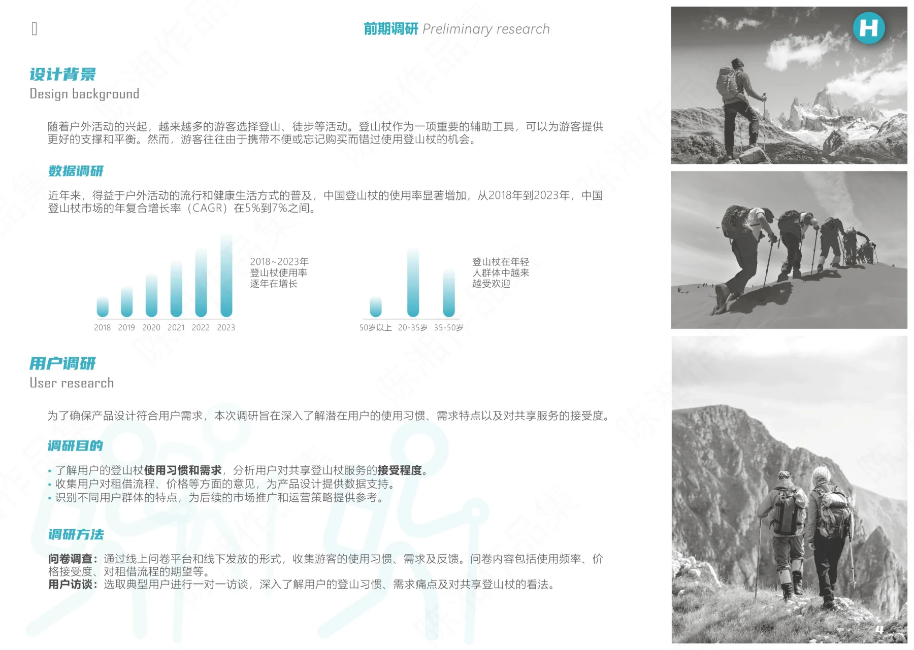
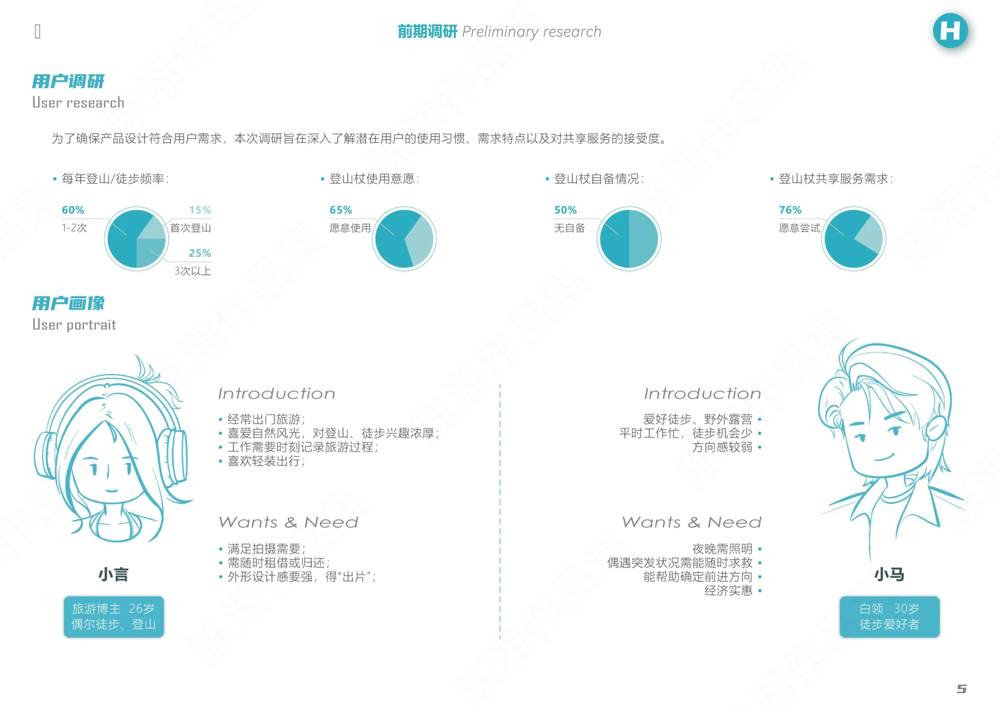
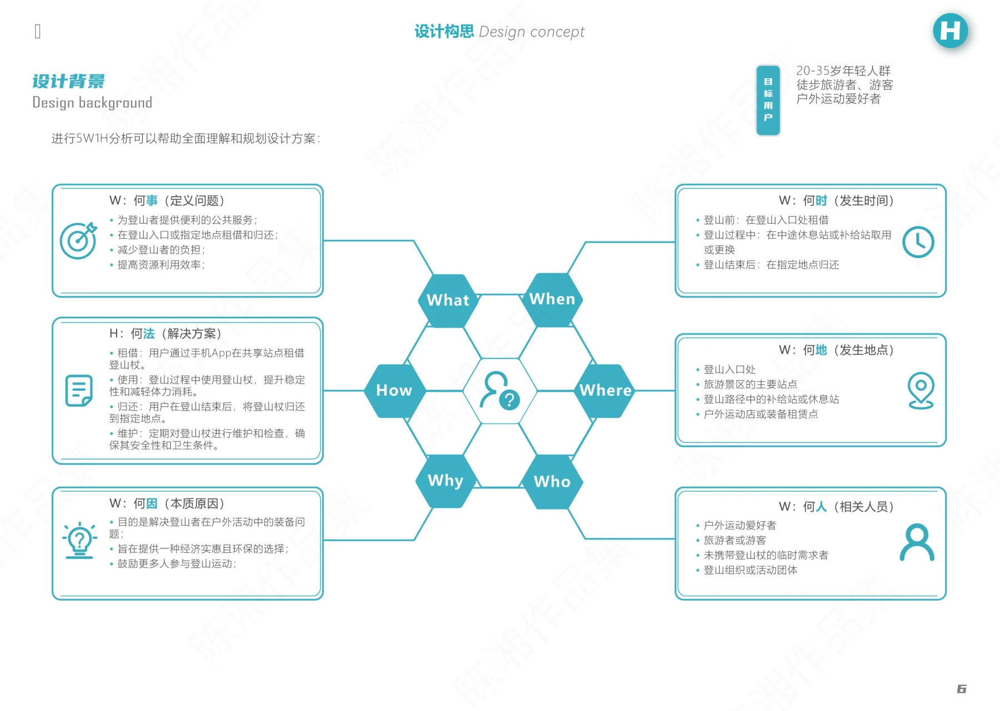
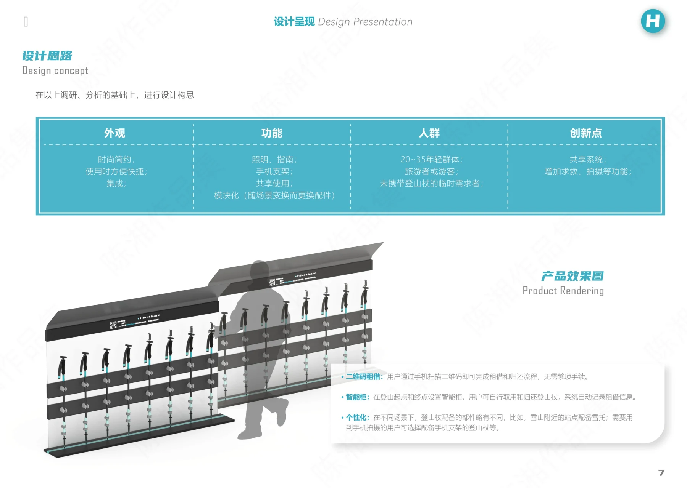
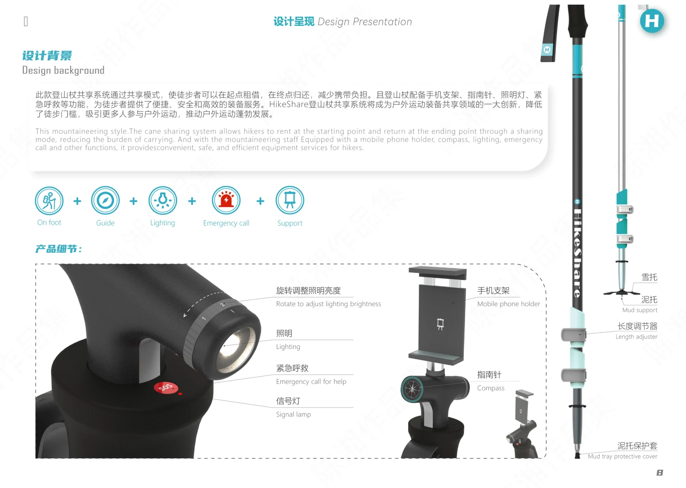

PROJECT 04 / HIKESHARE
HikeShare · 登山杖共享系统
围绕景区徒步场景，探索共享登山杖的使用与配套设施。

景区中的徒步需求
项目从登山运动场景出发，通过背景研究、用户调研与用户画像整理使用需求，探索登山杖共享的产品和服务机会。
系统化思考
作品集呈现 5W2H 设计构思、产品功能整理及共享配套设施，将单个登山杖与景区中的借还和存放场景关联起来。
产品方案表达
通过登山杖及共享设施的效果图与细节图说明产品构成，展示结构、模块与功能设计。当前材料为设计展示，未提供实际运营数据。
PROCESS / 设计过程与展板
CLICK TO VIEW FULL SIZE以下为作品集中记录的设计方案与过程。图片可点击放大查看，保留原稿内容与水印。






内容来源：《陈湘作品集-已压缩》第 5—10 页。未明确的项目时间、个人分工及落地结果未作推断。